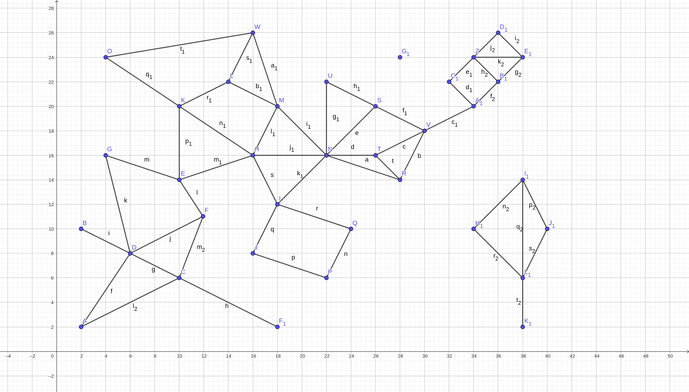
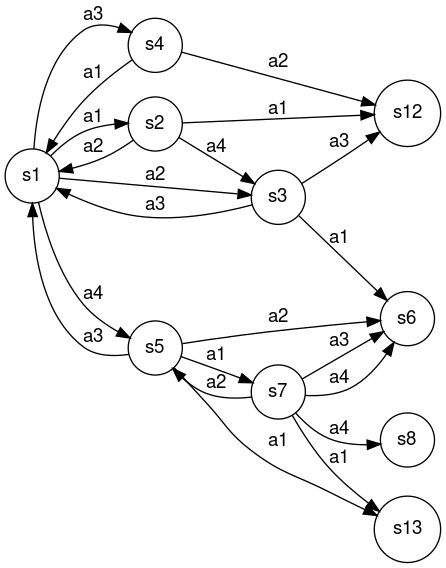

Avaliação final 01/2023
Orientações gerais
-
Quaisquer hipóteses relevantes devem ser explicitamente formuladas. Faz parte da avaliação a correta interpretação das questões. A clareza e a objetividade das respostas serão consideradas na avaliação.
-
Esta avaliação é individual. Em hipótese alguma você poderá fazer uso de material de colegas.
-
Durante esta avaliação você poderá fazer uso do seu material e de material existente na internet.
Questões
Abaixo são apresentas as questões desta avaliação. Todas as questões envolvem implementação. No entanto, elas são independentes. Você poderá, por exemplo, implementar a segunda questão primeiro e depois fazer a primeira questão.
Encontrar o menor caminho entre duas cidades (5.0 pontos)
Considere o mapa abaixo:

Cada ponto (vértice do grafo) neste mapa é uma cidade. Cada aresta existente no mapa representa uma rodovia que liga duas cidades.
A localização desta cidade é obtida através do eixo x e y. Por exemplo, a cidade A está localizada no ponto 2,2 enquanto que a cidade F está localizada no ponto 12,11.
As localizações das cidades estão armazenadas em um arquivo cidades.txt que respeita o seguinte formato:
A,2,2
B,2,10
C,10,6
Onde a primeira coluna é o nome da cidade, a segunda coluna é a posição no eixo X e a terceira é a posição no eixo Y.
As informações sobre as rodovias estão armazenadas em um arquivo rodovias.txt que respeita o seguinte formato:
A,D,8
D,C,5
C,F1,9
Neste caso, a primeira coluna é o nome de uma cidade que está conectada com a cidade na segunda coluna. A terceira coluna é a distância entre estes dois pontos. Por exemplo, na primeira linha temos uma conexão entre as cidades A e D com distância de 8 unidades. Esta conexão é bidirecional, ou seja, de A para D e de D para A. Em ambos os casos a distância é 8 unidades.
Crie um programa em python que lê os dados dos dois arquivos: cidades.txt e rodovias.txt, e que solicita uma cidade de destino e uma cidade de origem:
Informe a cidade de origem:
Informe a cidade de destino:
Retornando:
A solucao encontrada foi: ...
O custo da solucao eh: ...
Para situações onde existe um caminho entre origem e destino. A solução sempre deve encontrar uma solução ótima.
Para situações onde não existir um caminho entre origem e destino o sistema deverá imprimir:
Nao achou solucao.
O arquivo principal desta solução deve-se chamar Mapa.py e deve ser possível a sua execução por um usuário final.
Problema de otimização (2.5 pontos)
Considere um problema de otimização de uma função \(f(x) = x^{2} + 8x\). Utilize um dos algoritmos de subida da montanha para encontrar o mínimo global desta função no intervalo \([-10,4]\). Você deve:
- utilizar uma das implementações existentes no pacote
aigyminsper.search.CSPAlgorithms. - definir a forma para representação do estado.
- definir o método para geração dos sucessores.
Além da implementação, você deve informar qual é o valor de \(x\) que minimiza a função \(f(x) = x^{2} + 8x\).
Problema de tomada de decisão (1.0 ponto)
Considere a árvore abaixo.

Esta é árvore que um agente no estado \(n0\) montou para tomar a decisão sobre qual movimento realizar (X, Q ou M) em um ambiente competitivo de soma zero.
Esta árvore foi construída por uma implementação de algoritmo MinMax que vai até a profundidade 3 ou até o estado ser terminal. Neste caso, os estados terminais são \(n5, n6, n7, n9, n10\).
Nos estados que estão na última profundidade foi aplicado uma função de avaliação que resultou nos seguintes valores:
| Nodo | Valor |
|---|---|
| n13 | -0.5 |
| n14 | -0.8 |
| n15 | 0.2 |
| n16 | 1 |
| n17 | 1 |
| n18 | 0.5 |
| n19 | 0 |
| n20 | 0 |
| n21 | 1 |
| n22 | 0 |
| n23 | 0.2 |
| n24 | -0.1 |
Para os nodos terminais, temos:
| Nodo | Valor |
|---|---|
| n5 | 0 |
| n6 | 0 |
| n7 | -1 |
| n9 | 1 |
| n10 | 1 |
Qual a ação o agente irá executar?
Trajetória de um agente (1.5 pontos)
Considere a q-table abaixo:
| Estado | a1 | a2 | a3 | a4 |
|---|---|---|---|---|
| s1 | 1.820497446483078097e-01 | 1.672403026363881162e-01 | 1.462863182180913768e-01 | 1.319596081271695587e-01 |
| s2 | 6.575612431245246581e-02 | 4.886086895589866752e-02 | 5.729844336040951225e-02 | 1.236377010967146112e-01 |
| s3 | 1.797700116558251238e-01 | 6.869404674779222564e-02 | 6.700650144505655714e-02 | 7.866948735306483753e-02 |
| s4 | 4.804406621044567810e-02 | 5.681922181854820453e-02 | 5.161079122128384850e-02 | 6.260706462214110646e-02 |
| s5 | 2.382695363299177360e-01 | 9.660681443381205491e-02 | 1.907980944253327357e-02 | 1.328624891343894998e-01 |
| s6 | 0.000000000000000000e+00 | 0.000000000000000000e+00 | 0.000000000000000000e+00 | 0.000000000000000000e+00 |
| s7 | 1.948433758205934951e-01 | 2.493041368770583868e-02 | 2.463861052341146871e-02 | 9.983255573445537490e-03 |
| s8 | 0.000000000000000000e+00 | 0.000000000000000000e+00 | 0.000000000000000000e+00 | 0.000000000000000000e+00 |
| s9 | 1.666272840890315465e-01 | 1.737777096033592261e-01 | 1.270244184420298850e-01 | 2.780991079997025550e-01 |
| s10 | 1.364267140353675467e-01 | 3.505100204919884277e-01 | 1.719287045179138940e-01 | 2.685975326567368593e-01 |
| s11 | 3.925612105912859584e-01 | 1.276615480466181674e-01 | 6.362321028893133668e-02 | 2.032619282882837941e-01 |
| s12 | 0.000000000000000000e+00 | 0.000000000000000000e+00 | 0.000000000000000000e+00 | 0.000000000000000000e+00 |
| s13 | 0.000000000000000000e+00 | 0.000000000000000000e+00 | 0.000000000000000000e+00 | 0.000000000000000000e+00 |
| s15 | 2.338732681482918463e-01 | 3.562267860404136899e-01 | 5.474288785122312095e-01 | 3.173993875616495375e-01 |
| s16 | 4.471816274853617768e-01 | 7.829629822180412813e-01 | 4.633488318321981048e-01 | 5.644139615087363504e-01 |
| s17 | 0.000000000000000000e+00 | 0.000000000000000000e+00 | 0.000000000000000000e+00 | 0.000000000000000000e+00 |
E o grafo com as transições entre os estados:

Considere também que os estados \(s6, s8, s12, s13, s17\) são terminais.
Dado que o agente está no estado \(s1\), descreva qual é a trajetória do agente (estados e ações) até chegar em um estado terminal.
Explique qual é a lógica que justifica este funcionamento.
Entrega dos itens da avaliação
Toda a prova deve ser submetida no Github Classroom através deste link: https://classroom.github.com/a/-yJ1imh4.
Os arquivos que precisam ser submetidos são:
README.md: onde você irá colocar as respostas para as questões que não envolvem implementação ou os complementos das demais questões.requirements.txt: arquivo com todas as bibliotecas necessárias para as soluções que você irá entregar.Mapa.py: arquivo com a solução para o problema dos caminhos entre as cidades.Otimizacao.py: arquivo com a solução para o problema de otimização.
Não existe nenhum projeto de template e também não existem arquivos de testes.
No caso das implementações, você deverá definir tudo: como os estados são representados, quais são os parâmetros do construtor da classe, quais são as ações e como elas afetam os estados, qual é o critério que retorna true para o método is_goal(), e assim em diante.
O horário limite para entrega da prova é 10:00 do dia 15 de maio de 2023. Para fins de avaliação será considerado último commit no repositório.